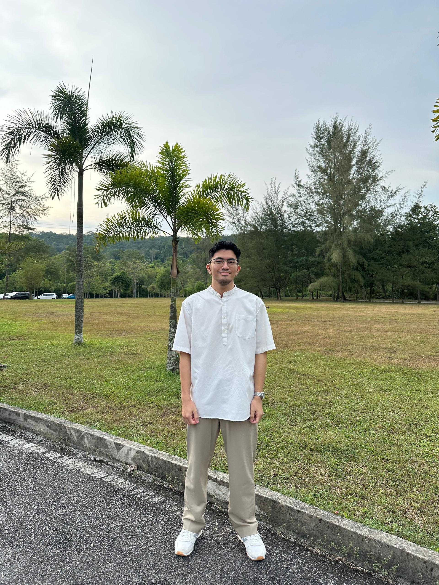

About Me
Introduction

My name is Danish Faris Bin Sukhairul Nizam and I am from Klang, Selangor. I am 23 years old and are currently in my 3rd year journey studying Bachelor's of Software Engineering at UTM Johor Bahru.
As a kid, I was passionate about computers, which led me to build and troubleshoot them. When encountering problems, I like to try solving them through code. The satisfaction of successfully fixed something is what drives me to keep going.
When I'm not studying and have leisure time, I tend to play a game on my PC called Dota 2 with my online friends or watch my favourite TV shows when I'm alone. If I'm feeling energetic, I would go on a 5 km jog around the campus. It helps freshen my mind after a long stress session.
My favourite fictional character is Spider-Man. I've always admired how Peter Parker balances the heavy weight of his responsibilities with just being a regular guy trying to make things work. As a software engineering student, I deeply relate to that constant juggling act trying to keep up with the demands of a tough degree while still managing everyday tasks. Despite the chaos and endless tasks he faces, he always steps up for the people he cares about, which is exactly the kind of grounded reliability I strive for in my own busy life.
"With great power comes great responsibility."
— Uncle Ben